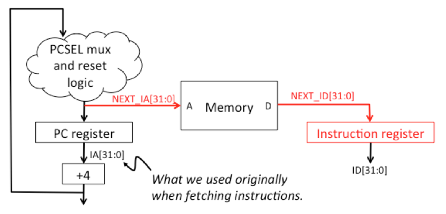

Optimizing the Beta
Useful links:
- Unpipelined Beta (PDF)
- Summary of Instruction Formats (PDF)
- Standard Cell Library
- Test file used by /project/test
Problem 1. Design Problem: Optimizing Your Beta
See the instructions below.
Use the Jade instance below to enter your design. Your design and Benmark will be saved each time you run a simulation.
Instructions
- Copy your Beta modules from the "Building the Beta" exercise into the design project workspace:
- Open up Lab 7: Building the Beta and scroll down to the Jade window in Problem 3. In the module toolbar at the top of the Jade window, click on to copy your /alu and /beta modules onto the module clipboard.
- Returning to the Jade instance for the design project, in the module toolbar below, click on , which will pop up a window to let you select which modules to copy into the current workspace. Select all the /alu and /beta modules and click "OK", which will add the selected modules to your parts bin.
- The top-level module in the Design Project is /project/test, which initially has an instance of your /beta/beta and a 3-port main memory containing the benchmark code. Your job is to optimize your Beta design as described below, possibly modifying the top-level module, e.g., to reduce the number of ports in the Main memory.
- Each time you make an improvement, use the tool to run the simulation and verify your Beta is still working correctly. In the plot window click to see your current Benmark (see below), which is used to compute your score. Running the simulation will save your work on the server and register your current score. You can submit as often as you'd like and the server will keep track of your best design to date.
NOTE: the goal is to keep the original functionality as you do your optimizations -- your optimized Beta should be able to run any legitimate Beta program. Lobotomizing your Beta isn't kosher and the checkoff code tests that each instruction is implemented and that illegal instructions do, in fact, generate ILLOP traps. So, for example, even though the IRQ input is tied to 0 in /project/test, you shouldn't delete the circuitry associated handling interrupt requests.
Note that the tool will select the copy for editing, so if your copy is intended to be the archived version, you'll need to reselect the original module and edit that.
Project Description
For this project we're asking you to optimize the price/performance of your Beta design. The "price" is determined from the area of your circuit as reported by JSim at the end of each simulation run (it reports the size in square microns when you click in the simulation pane). The "performance" is determined by the time needed to complete a set of benchmark programs. Benchmarking is the traditional, if somewhat unreliable, way of characterizing processor performance.
The benchmark suite can be found in the second Appendix below; in addition to a short functional test, it includes four benchmarks:
- Benchmark #1 makes two calls to a subroutine that performs an unsigned divide of its arguments, and then stores the quotients and remainders in main memory.
- Benchmark #2 makes two subroutine calls: one to do an in-place reverse an 11-element list, the second to compare the reversed list with an "answer" list to see if all went well.
- Benchmark #3 makes a copy of itself further up in memory and then jumps to the first location of the copy. The process is repeated 2 times.
- Benchmark #4 just performs a lot of register arithmetic and writes the result to memory -- should be a slam dunk for pipelined and superscalar machines.
See the benchmark suite for details about what values are written by each benchmark. The checkoff tests require 1104 cycles to execute on a standard unpipelined Beta. The test initially uses a clock period of 100ns, giving your Beta plenty of time to run each cycle. As you improve your design you'll shorten the clock period to reflect the propagation of your circuitry with the goal of running the benchmark as fast as possible, which will maximize your score.
Since your optimized design may operate differently than the Beta described in the Lab handouts, the test in the TEST tab is a little different than the others we've seen so far this semester. The test only supplies a RESET signal (high during the first cycle, low afterwards) and sets the clock period. The test is set up to run 1104 cycles, after which the test checks certain locations of this memory to see that the benchmark has completed successfully. If your design passes verification, you can submit it to the on-line checkoff system to record the number of points your design has received. The points are determined by the following formula:
Points = round(Benmark)/2 [min = 0, max = 20]
The smaller your circuit and the shorter the time it takes to complete the simulation, the better the Benmark. A good Beta design completed as described in the Lab 7 handout has a Benmark of 15 or more (depending on various design choices) and would receive a few points if submitted. Earning 10 points on the design project is very doable. Earning 15 points is within reach but will require close attention to all the details listed in the Hints section below. Earning all 20 points will require insight and a considerable investment of time.
Your first step should be to load your current Beta design as described above, and then verify that your Beta design can complete the benchmark successfully. You may find that the benchmark code triggers some bug in your original Beta design that was not detected by the Beta checkoff code -- you'll need to track down down and fix the problems before starting in on optimizations. [If you discover such a case, let us know so we can fix the Beta tests... thanks!]
Your second step should be to adjust the clock period down from the default value of 100ns. See #1 in the "Hints for speed" below. This will give you an accurate Benmark for your Lab 7 design.
Good luck! Don't be discouraged if your design doesn't earn a zillion points on the first try -- it takes some practice to get the knack of making circuits both fast and small. If you achieve a great Benmark, let us know and come join the 6.004 staff :)
Hints for size
- The biggest single size reduction comes from eliminating one port on the multi-port main memory by combining the read and write data ports, multiplexing a single 32-bit bus between read and write data (we'll never need both in the same cycle!). Use tristate drivers to send write data to the memory's data pins (the memory has these built-in for sending data back to the processor -- that's what the MOE signal has been controlling). The write-up for the Standard Cell library has more documentation for the memory component.
- Design an incrementer circuit for adding 4 to the PC instead of using a regular 2-input adder. This is easy to do -- just think about an adder where the second input is the constant 4 (i.e., all but one of the input bits is zero!) and then eliminate/simplify the adder logic appropriately.
- Design a shifter unit that uses a single circuit with seven 32-bit shifters to implement both left and right shifts. You can do this because, for example, a right shift can be implemented as a left shift by bit-reversing A[31:0] on the way in, and bit-reversing the answer on the way out. "Bit reverse" means simply flipping the 32-word end-for-end -- we want to shift A[0:31] instead of A[31:0].
- Use logic gates instead of a ROM to generate some of the control signals, e.g., RA2SEL which is needed early in each cycle before the register file can be accessed. You can get some space saving by eliminating a CTL ROM output, but it's not huge and your time is probably better spent on other optimizations. The main benefit of this optimization is a speed improvement for timing critical signals.
Hints for speed
- Determine your minimum clock cycle. Here's a recipe:
- Look at min observed setup time reported when you click the after simulation completes. Say it says 72.123ns -- this is the amount of time by which you can shorted your clock cycle. We don't recommend trying to shave it too close -- in this case one could shave maybe 72ns from the clock cycle, reducing the clock period to 28ns. Note that this number is related to the actual code and data of the benchmark code and the cycle time you can get away with will be smaller than reported by timing analysis, which is computing the worst-case tPD. In real life, your boss will make you use the worst-case number!
- Adjust the timing of the clock period as specified
in the TEST tab. The original clock period of 100ns is set by
this line in the TEST tab:
.cycle CLK=1 tran 1n assert inputs tran 49ns CLK=0 tran 50n where CLK=1 for 50ns and CLK=0 for 50ns of each test cycle. The assert inputs command sets time in each cycle when the RESET input will change to its value for the cycle. In this case, that happens 1ns after the rising clock edge.
To shorten the clock period to 28ns, simply adjust the timing for each phase of the clock, keeping the 50% duty cycle:
.cycle CLK=1 tran 1n assert inputs tran 13ns CLK=0 tran 14n - Assuming that you haven't made any modifications that change the number of cycles the benchmark takes to run, you can simply leave the .repeat 1104 as is. If you change the number of cycles (e.g., by adding branch delay slots with a 2-stage pipeline) then you'll need to look at the plotted waveforms to determine at which cycle you reach the end of the benchmark.
- minimize load-dependent delays. As you connect the
output of a gate to additional inputs, its capacitance increases and
so changes in the signal value take longer (see the tR and tF columns
in the standard cell documentation). Heavily loaded signals should be
buffered to reduce the total delay. There is a high-drive buffer (the
icon with the "H") available for driving
large loads. Use the timing analyzer (click on the icon
with a gate and a little clock) and look for signals in the critical
path where the delay is greater than 1ns -- those signals are slow
because they are driving many signals, so adding buffers can help
speed things up.
It pays to be clever about buffering. For example id[15] is heavily loaded since it's used many times during sign-extension for the BSEL mux and for the offset adder in the PC module. But it's also an address input to the register file, which we want to be fast since the register-file access is on the critical timing path. So it's best to leave the register-file input connected to id[15] while also creating a buffered version buf_id[15] and then using buf_id[15] for the BSEL mux and the PC logic. The heavy loads are now driven separately from the register-file input, i.e., there's a fast version of the signal and a slow version.
- use inverting logic. NAND, NOR, etc. gates are noticeably faster than their non-inverting counterparts (AND, OR, ...). Rearranging logic to use inverting gates can make a big difference performance along the critical path of your circuit. Positive logic gates are included in the standard cell library because they are often smaller than their inverting logic equivalents and thus may be useful for implementing logic that is not on the critical path.
- minimize delay along critical paths. Look at the device and cycle for which the minimum observed setup was reported when you clicked . By tracing back through the circuitry that lead to this critical path you should get some good ideas about where your circuit could use a speed boost. It's often possible to rearrange your logic to reduce the number of gate delays along the critical path, sometimes at the cost of additional gates elsewhere but that's a tradeoff which is often worthwhile.
- use a faster adder architecture for the ALU and branch-offset adder. Consider using an architecture that avoids rippling the carry through all 32 bits of the adder: carry-select and carry-lookahead are two techniques that are described in more detail in the Appendix below.
- reorganize instruction fetch. In a single cycle, an
unpipelined Beta can make up to two accesses to the relatively slow
main memory (4ns access time for the SRAM-sized memory we've been
using). Worse yet, the two accesses are in series: first we access
the memory to fetch the current instruction, then a second access is
needed for the data if the Beta is executing a LD, LDR or ST.
With a little reorganization, we can get the two accesses to happen in parallel! The trick is to fetch the next instruction at the end of the current cycle (overlapping with the data access, if any). The time for fetching the instruction is no longer needed at the beginning of the cycle, allowing you to cut almost 4ns from your cycle time. Here's a diagram showing the necessary modifications:
 Hint: you'll need to add a new terminal to your PC module. To do this, select the ICON tab for the PC module, click on the terminal tool (), then click on the diagram to add a new terminal. Edit the terminal's NAME property, giving it the name of the internal signal you want accessible to user's of the PC module. If you want it to match the other terminals, use the text tool () to add a text label that will be visible to designers when they're looking at the PC module's icon in their schematics. - A two-stage pipeline (instruction fetch and
everything else) can come close to cutting the cycle time in half. A
pipelined design is fun but a lot of work, so try the other hints
first.
If you're working on a two-stage pipeline, start by implementing the simple 2-stage pipeline shown below:

The annul_if signal should be 1 when reset=1 or when pcsel[2:0]!=0, which happens when we're changing the PC from sequential execution. Get this working first -- it won't be faster, but it sets the stage for a speed improvement in the next step.
In the second step, we want to have LD/LDR/ST take two cycles in the EXE stage: we'll compute the address in the first cycle and do the memory access in the second cycle. Let's call these two cycles MEM1 and MEM2. You'll need to convert the PC_IF, PC_EXE and IR_EXE registers to load-enabled registers (see Slide 6 of L14); the load enable should be hooked to not_stall. And you'll need to add a register that holds the memory address between the output of the ALU and main memory.
- During MEM1, we need to generate a stall signal which, inverted to create not_stall, will stall the IF and EXE stages, ensuring that LD/LDR/ST will get two exe cycles. You should add some logic to ensure WR = 0 during MEM1, even when the current instruction is ST (we'll do the actual write during MEM2). The memory address from the ALU is loaded into the new memory address register at the end of MEM1. Make sure stall is 0 during reset.
- During MEM2, the memory will use the address calculated during MEM1 to perform the requested memory operation. stall should be 0 during MEM2, so that normal execution will resume in the next cycle.
Now that the ALU and main memory operations are in different clock cycles, your clock cycle time should be noticeably smaller.
Here's a two-stage pipelined Beta that uses a slightly different scheme than the one described above and has many additional optimizations, earning a Benmark of 54. This version takes a lot of effort to debug, so be aware that implementing this design will take some time.
Appendix: Faster adders
Our simple ripple-carry adder is quite slow and we can cut many nanoseconds off the cycle time by using an adder architecture that doesn't require the carry to travel through 32 stages of logic. Some good alternatives:
- Carry-select adder (see article on Wikipedia). Basic idea: do two additions for the high half of the bits, one assuming the carry-in is 0, the other assuming the carry-in is 1. Use a MUX to select the appropriate answers when the correct carry-in from the low half is known. The Design Tradeoffs lecture has some additional design hints for carry-select adders.
- Carry-lookahead adder (see the Design Tradeoffs lecture). Basic idea: we can compute the carry-in for each bit using a tree of lookahead modules, resulting in a tPD that grows logarithmically with the size of the inputs instead of linearly.
Appendix: Test program
The BSim instance below shows the Beta program used to test the functionality of your improved Beta. You may find it useful to compare the cycle-by-cycle operation of your circuit with the cycle-by-cycle execution of the test program in the BSim simulator. Note that any changes you make below (e.g., adding breakpoints) will not be saved when leaving this window.